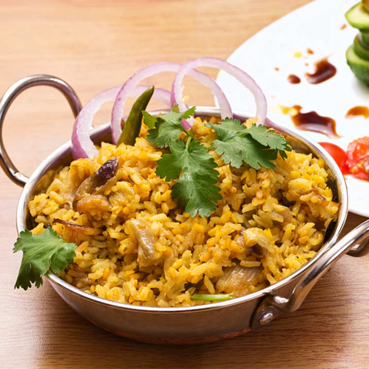

KHICHURI

Bengali Khichuri is a traditional dish of Bengali cuisine and is quite popular during Durga Puja. This is an easy-to-make one-pot meal that you can make for your family and friends on special occasions and festivals like kitty party, pot luck, and buffet.
A rice recipe which is aromatic enough to make your mouth water, this dish is prepared using basmati rice, dhuli moong dal, veggies like potatoes, peas and cauliflower mainly along with a tempering of whole spices. A nutritious dish that you can enjoy with curd or chutney, this main dish recipe is offered as prasad to the deity in Durga Puja. Your loved ones will like it for sure!
Ingredients
- 2 cup moong dal
- 2 chopped green chilli
- 2 teaspoon cumin seeds
- 10 cup water
- Himalayan salt as required
- 3 bay leaf
- 6 clove
- 4 green cardamom
- 1/2 teaspoon asafoetida
- 6 tablespoon ghee
- 2 inches cinnamon stick
- sugar as required
- 1 teaspoon red chilli powder
- 1 tablespoon ginger paste
- 1 teaspoon finely chopped turmeric
- 2 cup basmati rice
Cooking Process
- To make this khichuri recipe, first wash the rice under running water and soak them in water for half an hour. After soaking, rinse the rice. Then take a large bowl and add water in it along with the frozen mixed vegetables to defrost.
- Next, put a pan on medium flame and add the moong dal in it. Dry roast the dal till golden brown. This should not take more than five minutes. Transfer the roasted dal in a bowl and let it cool, then rinse them. Spray a little water on the dried dal and keep aside for about 5 minutes. Drain the remaining water.
- Now, put a pressure cooker on medium flame and heat ghee in it, then add the green cardamom, clove, cinnamon stick, cumin seeds, and bay leaves. Saute these spices for a few seconds till the whole spices leave their aroma in the cooker.
- Then, add the ginger paste in the cooker and saute for a few seconds. Afterwards, add the spices - red chilli powder, asafoetida or heeng, and turmeric powder. Let the spices cook for about 20-30 seconds and add the chopped green chillies along with finely chopped tomatoes. Saute the tomatoes and stir fry for another 2-4 minutes.
- Finally add all the defrosted veggies which must have peas, potato and cauliflower, though you can add more vegetables of your choice in the khichuri. Stir well and let the veggies cook for about 2-4 minutes.
- Then, add the roasted moong dal in the cooker and cook for another two minutes. Add the drained rice afterwards and stir well to mix all the spices with the dal and rice. Add water in the rice and dal mixture, cook on high flame for up to 5-6 whistles.
- When the khichuri is prepared, switch off the flame. When all the pressure has released on it's own, open the lid and transfer the khichuri in a serving bowl. Garnish with some ghee and roughly chopped coriander leaves, and serve as you like.